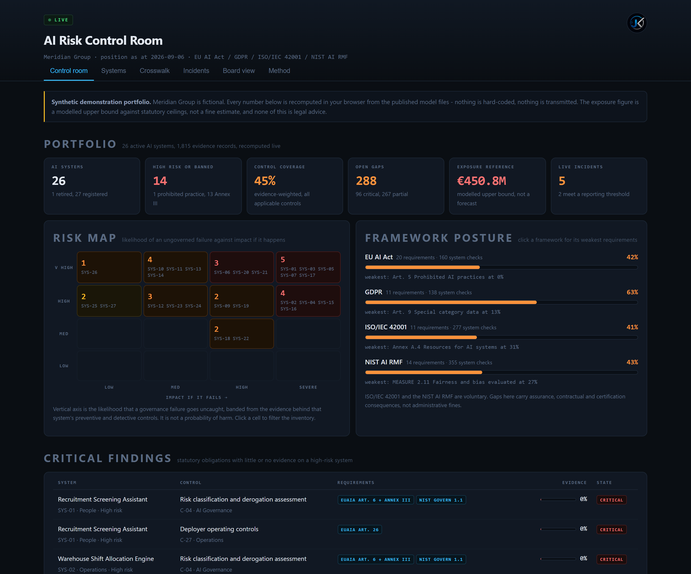

Choose a visual format, build the argument, inspect the caption and export a review-ready package. The graphics stay short. The evidence stays visible.
DESIGN RULEOne idea. One visual. One honest claim.Use a real screenshot, a verified source or a clearly labelled professional observation.
FORMAT LIBRARY
Pick the shape
ORIGINAL
Do not copy the examples.Borrow the visual logic: contrast, compression, tension and a clear takeaway. Claims and artwork stay original.
LIVE VISUAL
CONTRAST CARD
REVIEW DRAFT
Single-image concept · 4:5 mobile layout
EDITORIAL CONTROL
Make it yours
NO PUBLISH
LINKEDIN CAPTION
Readable after the image
POST GATE
Before export
✓ Visual claim is clear in 2 seconds✓ Project status is labelled accurately✓ Sources sit with factual claims✓ Caption has a real point of view✓ No engagement bait or invented metrics
A weekly editorial system for AI governance, risk, fraud intelligence and the future of work. Evidence first. Human review before anything leaves this workspace.
NEXT REVIEW WINDOWFRI 30 OCT · 15:00Europe/Berlin · DST-aware
THIS WEEK'S THESISGOVERNANCE IS AN OPERATING SYSTEMAI Act · controls · evidence
RESEARCHED TOPICS10Across 6 editorial pillars
EVIDENCE-COMPLETE7Primary sources attached
SHORTLISTED3Scored against this week's rubric
POST STATUSDRAFTNo publishing or scheduler connected
CANDIDATE TOPICS · WEEK 44
Research queue
SELECTED STORY
RISK / BUSINESS
EVIDENCE READY
EDITORIAL SCORE91/100
91
PRIMARY EVIDENCE
DRAFTING PIPELINE · HUMAN-READABLE BY DESIGN
Writing lab
120–220 words · source-linked · no invented claims
SIGNATURE VISUAL
Evidence, not decoration
REAL ASSET

AI GOVERNANCE CONTROL ROOM · PUBLIC PROJECT SCREENSHOT
A control room is a management system, not a dashboard.
Use the real project screen as the visual anchor. Add a small source/date footer only when the image contains a statistic.
PRE-PUBLISH GATE
Quality control
6 / 6 PASS
EDITORIAL RHYTHM
Week at a glance
MONDAY → FRIDAY · EUROPE/BERLIN
Editorial calendar
The Friday package is prepared for review, not auto-published.
TRACEABILITY LAYER
Sources & evidence
Currentness checked 25 Oct 2026
MEASURE WHAT HAPPENED
Performance history
No fake analytics. Import actual LinkedIn metrics when available.
↗
No metrics imported yet
When a post has real data, record impressions, reactions, comments, reposts, saves, profile visits and follower growth with the collection date and denominator. Until then, this panel stays empty.